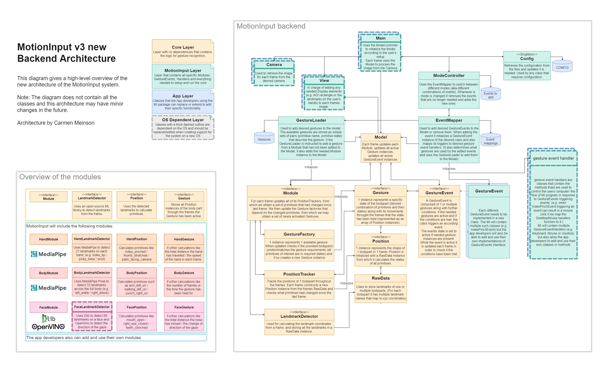

Setting Up
Expected to be run on Python 3.9 + Windows
Make sure you have installed all the libraries in the requirements.txt
As we don’t yet have the GUI, App layer and the app-specific main.py, we are using the test file to run the system.
Architecture

So a quick overview of how the the system works. It can be observed in 2 parts: the setup and the frame by frame processing.
setup
Firstly, information for gestures and events are loaded from the JSON files
The ModeController class is used to decide which events should be added to the model. (set of events based on the defaoul mode in the mode_controller.json)
The EventMapper then initialises the according event classes (mapping them to desired handlers) and add them to the model. (events as defined in events.json)
Based on the added events the needed gestures and modules are automatically added to the model by the GestureLoader. (gestures as defined in gestures.json)
frame by frame
The opencv image is retrieved from the camera class.
Process the frame in the Model in following steps:
Update the modules:
Use the modules landmark detector (ML library) to retrieve the RawData (aka the coordinates of all landmarks) from the frame.
Update all position trackers with the RawData, which results in a set of primitives that had changed since the last frame.
Update all the gesture factories that use the changed primitives, which may create new active Gestures.
If the module created any Gesture instances, they are added to the model, which may lead to (de)activation of some gesture events.
Update all the active gestures, which may result in deactivation of some of them, and consequently (de)activation of some gesture events.
Run all active gesture events, which may result in the trigger functions in the events being called.
Running the code
The system can be run without the GUI by running the motioninput.py and the behaviour of the system can be adjusted by changing the JSON files
Note: Currently, for the extremity triggers in the body module, hardcoded calibration information is located in the various JSON files. In particular, the coordinates of the extremity triggers are set manually. Documentation of how developers can interact with the config JSONs can be found here
Notes
Please do keep in mind that this architecture was done on a tight schedule by a smol 2nd year, so I am sure there are some parts of it that were not implemented in the most efficient manner. So if you have an idea of how to improve something let me know.
If there is some functionality missing from the core that you need, feel free to let me know. If it makes sense I will add it or make the needed changes.
If there are any primitives/gestures/events/event_handlers that you are missing feel free to add them in yourself (as in please do we really could use some help here:))
-xoxo Carmen
Adding Features
Adding GestureEvents
Create a new class extending the GestureEvent class from the core module (many examples are available in the gesture_events folder). You can check the currently available gestures in the data/gestures.json and in case the gestures you need are not available feel free to add a new Gesture. (Just a note that you are allowed to use gestures from different modules in the seme event) Once you have added the event class into the gesture_events folder, you need to add it to the folders __init__.py file in the same way the previous events were added, in order for the EventMapper to have access to it. Now if you want to actually add the event into your Model and use it first you need to add it into the data/events.json as the other events have been added (this is where you map the events triggers to actual functions from the gesture event handlers and if the handlers you require are not available to you feel free to add a new event handler). Now you are all set and should be able to use the gesture event after adding it to a mode in the data/mode_controller.json
NB! Please also add any new events to the “Currently available Events” section of this doc along with a short description of it.
Adding Gestures
Adding new Gestures is as easy as adding one line to the data/gestures.json file, with just the name of the gesture and a set of all the primitives it uses. (again plenty of examples already available). Note that the name of the gesture should not overlap with the name of any other gesture, even in other modules. In case the primitives you need are not available feel free to add a new primitive.
Adding Primitives
Now adding primitives is a bit trickier and definitely should not be done too often, as unlike Gestures and GestureEvents the primitives affect the efficiency of processing each frame, as for every frame we calculate the states of all the primitives. Adding primitives is done in the specific modules Position classes (so currently in the HandPositio, BodyPosition and ExercisePosition classes)
Adding event handlers
Event handlers (classes that contain all the functions that are called by GestureEvents and are responsible for actually controlling the users computer e.g. moving the mouse or pressing keys) are stored in the gesture_event_handlers folder. If you have added any new classes or new functions to already exicsting handler classes, please first add them to the __init__.py file in the gesture_event_handlers folder in the same manner as the previous examples, in order for the EventMapper class to be able to use the new functionality. After this you can now use your handler by mapping GestureEvents to it in the EventMapper class.
Configuration
Settings that are unique to each users can be configured by editing the four JSON files located in the data directory. For the time being these settings can only be changed manually, however the aim is to be able to update them during runtime. The four JSON files are responsible for holding information about:
Developers can read values from these JSON files using the JSONEditor classes.
Gestures
Gestures are composed of primitives which are either activated or deactivated, represented by a boolean value.
The gestures are split between the seperate modules:
hand
body
head
eye
speech
A gesture will be of the form:
"gesture_name": {
"primitive_1": bool,
"primitive_2": bool,
"primitive_3": bool,
...
}
Events
The events are mappings of GestureEvent classes to event handlers method(s).
The GestureEvent class (”type”) determines under what conditions and when will the handler methods (”triggers”) be called. These conditions can be modified by the “args” if the conditions are event instance-specific or by elements in the config file if those conditions are event class-specific.
The “bodypart_names_to_type” determines what detected bodyparts (aka trackers in the modules like “Left”(hand), “Right”(hand) or “head”) will be used by the event instances. This is mostly used to determine the hand used in hand gestures.
The “triggers” are pairs of handler classes and its methods that we want to be called when the event calls its trigger functions. All available methods are well visible in the __init__.py in gesture_event_handlers
An event will be of the form:
"event_name": {
"type": "GestureEvent_class_name",
"args": {
"arg_1": val,
"arg_2": val,
...
},
"bodypart_names_to_type": {
"modules_tracker_name_1": "events_bodypart_name",
...
},
"triggers": {
"trigger_1_name": ["GestureEventHandler_class_name","method_name"],
"trigger_2_name": ["GestureEventHandler_class_name","method_name"],
...
}
}
Currently available Events
Note: in case the gesture names are unclear pleas refer to the data/gestures.json to see the exact primitives they are comprised of.
hand_to_idle_mode_left_hand: Changes the mode to “idle_hand” whenever the left palm is not facing the camerahand_to_active_mode_left_hand: Changes the mode to “basic_hand” whenever the left palm is facing the camerarocknroll_next_mode: By doing the rocknroll gesture on both hands the mode is changed to the next one according to the set iteration orderpalm_height_change_aoi_resize_left_hand: Updates the size of the AOI based on the size of the palm (so by how far it is from the camera)palm_center_move_mouse_left_hand: Movinge the cursor according to the center of the palmindex_pinch_left_press_left_hand: Left click by pinching the index fingerindex_pinch_touch_press_left_hand: Touchpoint press by pinching the index fingermiddle_pinch_right_press_left_hand: Right click by pinching the middle fingerpinky_pinch_monitor_change_left_hand: Changing the display the mouse is moved on by pinching the pinky fingerdouble_pinch_double_click_left_hand: Doubleclick by pinching both the index and the middle fingerindex_pulldown_left_press_left_hand: Left click by lowering the tip of the index finger below its upper joint (DIP joint)index_scissor_left_press_left_hand: Left click by touching the index finger to the middle fingerthumb_scissor_right_press_left_hand: Right click by touching the thumb to the index fingerdouble_scissor_doubleclick_left_hand: Double click by pressing the thumb, index and middle finger against each otherfist_doubleclick_left_hand: Doubleclick by clenching the fistindex_middle_scroll_left_hand: Scrolling by holding up only the index and middle fingers and moving them up or down togetherdouble_index_pinch_zoom: Zooming by holding index pinched on both hands and moving the hands closer together or apartup_extremity:arm_left_extremity:punch_left_extremity:kick_left_extremity:arm_right_extremity:punch_right_extremity:kick_right_extremity:squating_exercise:walking_exercise:speech_clicking:speech_double_clicking:smiling_event:open_mouth_event:raise_eye_brow_event:nose_tracking_event:nose_direction_tracking_event:eye_tracking_event:keyboard_active_event: Activates the in air keyboard. Move fingers over keys, when palms are facing the camera, to hover over themkeyboard_click_event: Press a key on the in air keyboard by hovering over a key and performing selected click gesture (pulldown, pinch or scissor). Hold down the key by holding the click gesture for at least the selected duration (3s by default)
Modes
The modes determine the sets of events that are available to the user at any one time. When the MI starts the events from the “default” mode are loaded into the model and then afterwards the user can switch between modes in one of the following ways:
By having an event with the “trigger” [”ModeChange”,”mode_name”]. This handler sets the mode to whatever mode name is specified.
By having an event with the “trigger” [”IterativeModeChange”,””]. This handler sets the mode to whichever one follows the current order specified in the “iteration_order”.
If using the GUI then it will be possible to request the mode change through the protocol.
The “iteration_order” should contain every mode name that is listed in the “modes” with another mode name from there. Ideally, the iteration orders should make one or multiple closed loops (possibly of size 1 if changing from that mode does not make sense) meaning it should be possible to get back to the mode where the user started.
The JSON file has the following format:
"default": "mode_name",
"iteration_order": {
"mode_name_1": "mode_name_2",
"mode_name_2": "mode_name_1",
"mode_name_3": "mode_name_3",
...
},
"modes": {
"mode_name_1":[
"event_name_1",
"event_name_2"
...
],
"mode_name_2": [
"event_name_1",
...
],
...
}
Config
General
Non-specific higher level settings:
"general": {
"view": {
"window_name": "UCL MotionInput v3.0"
}
...
}
Events
Event configs hold settings for a given event:
"event": {
"event_val_1" : 1,
"event_val_2" : 1,
...
}
Pinch Events
"index_pinch": {
"frames_for_press": 2
},
"middle_pinch": {
"frames_for_press": 2
},
"double_pinch": {
"frames_for_press": 2
},
"index_pulldown": {
"frames_for_press": 2
}
frames_for_press: The amount of frames the gesture needs to be active to trigger a press.
Idle Event
"idle_state_change": {
"frames_for_switch": 10
}
frames_for_switch: The amount of frames the idle event needs to be active to switch to idle mode (turn off area of interest and stop looking for gestures other than the active gesture).
Palm Height Change Event
"palm_height_change": {
"frames_for_switch": 10,
"levels": [
0,
0.105,
0.155
]
},
frames_for_switch: The amount of frames the palm change gesture needs to be active for the palm height to be registered as changed.levels: The different palm height levels, being outside of your current level for 10 frames will cause your current level to update.
Scroll Event
"scroll": {
"frames_for_switch": 2,
"index_middle_distance_threshold": 0.3
},
frames_for_switch: The number of frames the scroll gesture needs to be active to cause the scroll action.index_middle_distance: The threshold used for determining whether the middle and index fingers are together.
Zoom Event
"zoom": {
"frames_for_switch": 4
},
frames_for_switch: The number of frames the zoom gesture needs to be active to cause the zoom action.
Mode Change Event
"mode_change": {
"frames_for_switch": 4
}
frames_for_switch: The number of frames the mode switch gesture needs to be active to switch to the next mode.
Modules
Holds information for each of the different modules.
Hand
position_pinch_sensitivity: The sensitivity of pinch events.position_threshold_distance: Threshold used for determining whether or not a finger is folded.min_detection_confidence: Minimum confidence value from the hand detection model for the detection to be considered successful.min_tracking_confidence: Minimum confidence value from the landmark-tracking model for the hand landmarks to be considered tracked successfully.max_num_hands: The maximum number of hands used by MI
Exercise
mode: Whether or not equipment is being used or not, can be noequipment or equipment.
Body Gestures
Holds information about extremity triggers and exercise gestures.
Extremity Triggers
Rerpresnts information of an extremity trigger, of the form:
"trigger_name": {
"landmark": "trigger_landmark",
"coordinates": [x,y],
"action": "trigger_action",
"key": "trigger_key",
"activated": true/false
},
landmark: Which body part can activate the extremity trigger.coordinates: The position of the extremity trigger on the view.action: What activating the extremity trigger does.key: What key the extremity trigger presses/holds down.activated: Whether or not the extremity trigger is used
Exercise
Holds information about exercise gestures, seperated by exercises using equipment and exercises without equipment.
"exercise_name": {
"states": {
"state_1": {
"activated": true/false,
"val" : 1
},
"state_2": {
"activated": true/false,
"val" : 1
}
"action": "exercise_action",
"key": "exercise_key",
"count": 1
}
states: The different gestures that make up an exercises.activated: Whether or not the state is active.val: Each state has a counter, this value holds the starting count (soon to be removed)
action: What performing the exercise does.key: Whether activating the exercise presses/holds down a key.count: Each exercise has a counter representing how many times the exercise has been carried out, this value holds the starting count.activated: Whether or not the exercise is used
Handlers
Holds information on all of the event handlers.
Area of Interest
"aoi": {
"spacing_levels": [
0.3,
0.4,
0.5
]
}
spacing_levels_: The size scalers of the area of interest.
Mouse
"mouse": {
"smoothing": 3,
"sensitivity": 3
}
smoothing: How smooth mouse movements are.sensitivity: Mouse sensitivity.
Finger
"finger": {
"radius": 5
}
radius: The radius of the circle that can be made by the finger.
Zoom
"zoom": {
"smoothing": 3
}
smoothing: The smoothnes of the zoom action